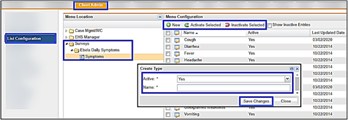

The 21-day Symptom Tracker is designed for each client to manage the symptoms that are tracked. Symptoms for each exposure type may evolve over time, so you can add new symptoms at any time. You must add the COVID-19 symptoms you want to monitor before using the module.
This section describes how the Client Admin adds symptoms to the Symptom Tracker. The default temperature of 100.4 can be adjusted by our Support team or your Account Executive.
